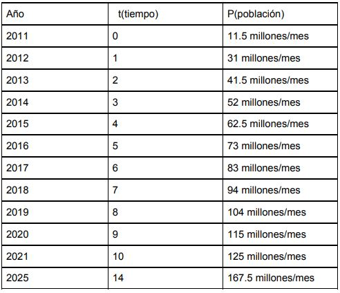
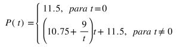

Predicción en el crecimiento poblacional de League of Legends
Cuando estaba cursando la materia de Ecuaciones Diferenciales en la licenciatura y como parte
de la evaluació, el profesor nos pidió realizar un proyecto final donde pudieramos integrar todo
lo aprendido durante el curso en cualquier tema de nuestro interés propio y libre.
Fue entonces cuando mesurgió la idea de hacerlo sobre uno de mis videojuegos favoritos y uno de los más famosos
dentro del ámbito.
League of Legends es un juego de tipo MOBA el cual desde hace varios años es de los más populares
entre la comunidad gamer gracias a que ha sido el parteaguas en muchos ámbitos y de los juegos que
más han innovado en la industria, aparte de mantenerse vigente a pesar de que el juego fue lanzado hace más de 10 años.
Tomando todos estos factores en cuenta pensé que sería muy interesante intentar predecir como sería el crecimiento
poblacional de los jugadores activos dentro de este videojuego.

Entonces junto con 2 amigos, a los cuales también les interesó el tema, decidimos llevar a cabo
este proyecto. Primero, como en todo proyecto, tuvimos que investigar e indagar mucho sobre los datos
existentes acerca de la población con la que contaba el juego en dsitintos años dentor de su historia.
Tomando estos datos en cuenta realizamos un modelo matemático que pudiera seguir mas o menos la tendencia
de crecimeinto en los ultimos años.
Luego de varios calculos y modificaciones conseguimos llegar a un modelo que fuera el más cercano a los
resultados reales. Una vez establecido el modelo donde la unica variable era el timepo, procedimos a realizar
el cálculo para los siguientes años, obteniendo así los siguientes resultados:

Esta información puede ser muy valiosa para la empresa desarrolladora del juego ya que dado a la cantidad de jugadores
deben contar con servidores muy grandes y de no estar prevenidos del crecimeinto poblacional podrían llegar a tener problemas graves
con sus servidores lo cual se pude traducir en grandes pérdidas económicas para la empresa.
Por ultimo, dejo a continuación el Reporte con todas las consideraciones y procedimiento técnico a fondo: